| ❌ | ✅ | ✅ | ✅ | ✅ | ✅ |
|---|
umath – Math functions¶
This MicroPython module is similar to the math module in Python.
See also the built-in math functions that can be used without importing anything.
Rounding and sign¶
- ceil(x) int¶
Rounds up.
- Parameters:
x (float) – The value to be rounded.
- Returns:
Value rounded towards positive infinity.
- floor(x) int¶
Rounds down.
- Parameters:
x (float) – The value to be rounded.
- Returns:
Value rounded towards negative infinity.
- trunc(x) int¶
Truncates decimals to get the integer part of a value.
This is the same as rounding towards
0.- Parameters:
x (float) – The value to be truncated.
- Returns:
Integer part of the value.
Powers and logarithms¶
- e = 2.718282¶
The mathematical constant e.

Trigonometry¶
- pi = 3.141593¶
The mathematical constant π.
- degrees(x) float¶
Converts an angle from radians to degrees.
- Parameters:
x (float) – Angle in radians.
- Returns:
Angle in degrees.
- radians(x) float¶
Converts an angle from degrees to radians.
- Parameters:
x (float) – Angle in degrees.
- Returns:
Angle in radians.
- sin(x) float¶
Gets the sine of an angle.
- Parameters:
x (float) – Angle in radians.
- Returns:
Sine of
x.
- asin(x) float¶
Applies the inverse sine operation.
- Parameters:
x (float) – Opposite / hypotenuse.
- Returns:
Arcsine of
x, in radians.
- cos(x) float¶
Gets the cosine of an angle.
- Parameters:
x (float) – Angle in radians.
- Returns:
Cosine of
x.
- acos(x) float¶
Applies the inverse cosine operation.
- Parameters:
x (float) – Adjacent / hypotenuse.
- Returns:
Arccosine of
x, in radians.
- tan(x) float¶
Gets the tangent of an angle.
- Parameters:
x (float) – Angle in radians.
- Returns:
Tangent of
x.
- atan(x) float¶
Applies the inverse tangent operation.
- Parameters:
x (float) – Opposite / adjacent.
- Returns:
Arctangent of
x, in radians.
Other math functions¶
- isfinite(x) bool¶
Checks if a value is finite.
- Parameters:
x (float) – The value to be checked.
- Returns:
Trueifxis finite, elseFalse.
- isinfinite(x) bool¶
Checks if a value is infinite.
- Parameters:
x (float) – The value to be checked.
- Returns:
Trueifxis infinite, elseFalse.
- isnan(x) bool¶
Checks if a value is not-a-number.
- Parameters:
x (float) – The value to be checked.
- Returns:
Trueifxis not-a-number, elseFalse.
- modf(x) Tuple[float, float]¶
Gets the fractional and integral parts of
x, both with the same sign asx.Not to be confused with
fmod().- Parameters:
x (float) – The value to be decomposed.
- Returns:
Tuple of fractional and integral parts.